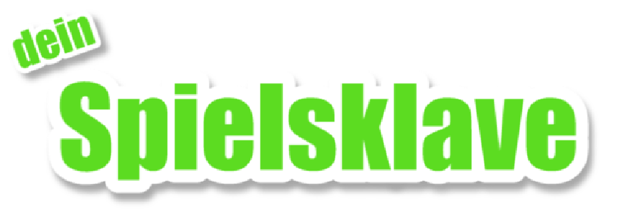

<!DOCTYPE html>
<html>
<head lang="de">
  <meta charset="UTF-8">
  <title>#Spielsklave – Tom programmiert dein Spiel!</title>

  <meta name=viewport content="width=device-width, initial-scale=1">
  <meta name="description" content="Eine Videoreihe, in der du darüber abstimmen kannst, was als Nächstes entwickelt werden soll!">
  <meta name="author" content="Tom" />
  <meta name="copyright" content="© 2016 LetsGameDev" />
  <meta http-equiv="content-language" content="de" />

  <link rel="stylesheet" href="css/styles.css">
</head>
<body>
  <main>
    <iframe src="game/index.html" frameBorder="0" width="768" height="432"></iframe>
    <aside>
      <header>
        
        <div class="badges">
          <a href="https://github.com/letsgamedev/spielsklave/stargazers"
          title="Schenk uns 'nen Stern auf GitHub!"></a>
          <a href="https://twitter.com/letsgamedev"
          title="Folge Tom auf Twitter!"></a>
        </div>
      </header>
      <article>
        <h2><i class="mdi mdi-gamepad"></i> Steuerung</h2>
        <p>
          Mit den <kbd><i class="mdi mdi-arrow-all"></i> Pfeiltasten</kbd>
          bewegst du deinen Charakter, welchen du mit <kbd>V</kbd> wechseln kannst.
        </p>

        <p>
          Im Zweispielermodus, welchen du mit <kbd>C</kbd> ein- und ausschalten
          kannst, kann das Schwein vom zweiten Spieler mit der
          <kbd><i class="mdi mdi-cursor-default-outline"></i> Maus</kbd>
          gesteuert werden.
        </p>
      </article>
    </aside>
  </main>
</body>
</html>
